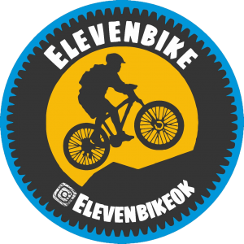

Elevenbike
Bienvenidos a Elevenbike
Buenas a tod@s, nos presentamos como Elevenbike, un grupo muy nuevito que le encanta salir a pedalear en grupo, entrenar, pasarla súper bien, seguir sumando km juntos y conocer lugares maravillosos.
Solemos hacer salidas semanales, las cuales las diferenciamos en nivel Principiantes, nivel Intermedio y ahora estamos sumando nivel Avanzado.
Subimos las salidas a nuestro Instagram @elevenbikeok y en varios grupos pedaleros de Facebook.
Somos un grupito muy abierto con toda la onda para que se sume quien guste, con solo tener una bici en condiciones y lo necesario para que tus salidas sean seguras.
Podes salir con nosotros cuando te quede cómodo el día, el horario o te guste cierta salida y como promocionamos la vida sana y el pedaleo en grupo nos encanta salgas con otros grupos, para así entre todos enriquecernos de experiencias, conocimiento y muy buenas vibras.
Solemos variar en salidas urbanas y rurales y alentamos a los que recién se inician en sus salidas de principiantes a que se pongan una meta de avanzar al siguiente nivel y así entre todos ponernos salidas con objetivos y km a cumplir para avanzar en nuestro entrenamiento.
Nos encanta formar equipo y distribuir roles y tareas dentro del mismo, las cuales este 2022 comenzaremos a delegar salidas y responsabilidades para abrir el juego.
Estamos súper abiertos a salir con otros grupos y generar salidas grupales para seguir avanzando en esto de pedalear en grupo y este año tendremos muchas novedades al respecto.
Realizamos salidas en época de pandemia, en donde el uso del tapaboca cuando paramos es importantísimo para cuidarnos entre todos y a nuestras familias.
Los invitamos a todos los que deseen pedalear y se animen a que nos sigan en Instagram y se sumen alguna salida para conocernos.
Nos vemos en una pedaleada.
Equipo Elevebike.
Si queres formar parte de salidas grupales seguras, organizadas y gratuitas, te invitamos a sumarte a:
- SALIDAS KIDS
- PRINCIPIANTES
- INTERMEDIAS
- AVANZADAS
- RURALES
- DE ENTRENAMIENTO
- SOLIDARIAS